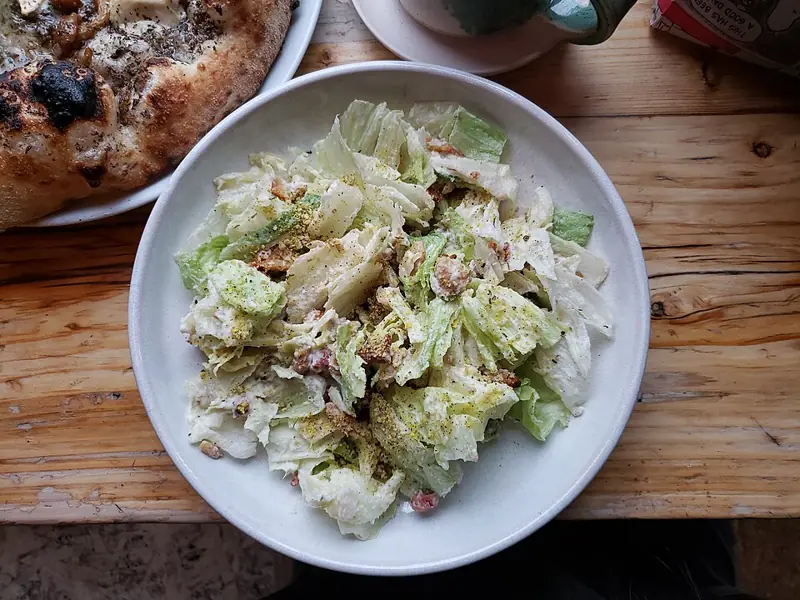

Фото: Andy Li, CC0

Цезарь с курицей
Листья салата с жареной курицей, сухариками, пармезаном и соусом на желтке
40 мин3 порц.626 ккал на порциюБ 45 · Ж 36 · У 28Американская кухня
Продукты на 3 порц.
- Куриное филе400 г
- Салат листовой250 г
- Хлеб белый5 шт
- Пармезан50 г
- Помидоры по желанию1 шт
- Яйцо куриное1 шт
- Горчица1 ч. л.
- Лимон1 ст. л.
- Чеснок2 зуб.
- Оливковое масло4 ст. л.
- Растительное масло1 ст. л.
- Соль0,5 ч. л.
- Перец чёрный молотыйпо вкусу
- Вода500 мл
Как готовить
- Нарежьте хлеб кубиками 1,5 см, смешайте с 1 ст. л. оливкового масла и 1 рубленым зубчиком чеснока. Подсушите в духовке при 180 °C (средний жар) 10 минут до золотистого цвета.
- Посолите и поперчите филе, обжарьте на растительном масле на среднем огне по 5-6 минут с каждой стороны, пока сок при проколе не станет прозрачным. Дайте отдохнуть 5 минут и нарежьте ломтиками.
- Для соуса опустите яйцо в кипяток на 1 минуту, затем в холодную воду.
- Выпустите яйцо в миску, добавьте горчицу, лимонный сок, второй зубчик чеснока через пресс, треть пармезана и щепоть соли. Взбивайте вилкой, тонкой струйкой вливая оставшееся оливковое масло, пока соус не загустеет.
- Порвите листья салата руками, перемешайте с половиной соуса.
- Выложите сверху курицу, сухарики, дольки помидора, полейте оставшимся соусом и посыпьте тёртым пармезаном.
Совет. Листья должны быть сухими, иначе соус не прилипнет. Если не хотите возиться с яйцом, смешайте 3 ст. л. майонеза с горчицей, чесноком, лимоном и пармезаном.